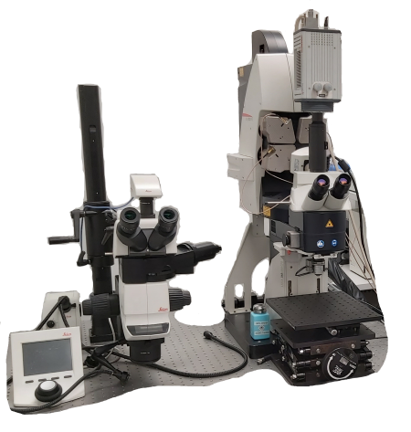

An upright fixed-stage Leica SP8 confocal microscope suitable for small
animal imaging. Next to the confocal microscope is a Leica M205 FA
stereo microscope for mesoscopic imaging and observation in brightfield
and fluorescence.
Available techniques:
- 3-dimensional confocal imaging (fast with resonant scanner or
high resolution with galvano scanner)
- Widefield imaging with a sensitive EM-CCD camera
- mesoscopic reflected brightfield and fluorescence imaging (with
stereo microscope)
Objectives:
Note that only 1 objective lense can be installed at a time; for
currently installed objective refer to the booking system.
- HCX FL PLAN 2.5x/0.07 dry, FWD 9.2 mm, CG -
- HCX PL FLUOTAR 5x/0.15 dry, FWD 13.7 mm, CG -
- HCX PL FLUOTAR 10x/0.3 dry, FWD 11 mm, CG -
- HCX APO L 10x/0.3 water dipping, FWD 3.6 mm, CG -
- HCX APO L 20x/0.5 water dipping, FWD 3.5 mm, CG -
- HC PL APO 20x/0.75 multi-immersion (water, oil, glycerol), FWD 0.66
mm, CG - /0.17 mm (water)
- HC FLUOTAR L 25x/0.95 water dipping, FWD 2.5 mm, CG -
- HCX IRAPO L 25x/0.95 water dipping, FWD 2.5 mm, CG -
- HCX APO L 40x/0.8 water dipping, FWD 3.3 mm, CG -
- HC PL APO 40x/1.1 water immersion, FWD 0.62 mm, CG 0.14 - 0.18 mm
- HC APO L 63x/0.9 water dipping, FWD 2.2 mm, CG -
- HC PL APO 63x/1.2 water immersion, FWD 0.3 mm, CG 0.14 - 0.18 mm
- HC PL APO 63x/1.3 glycerol, FWD 0.3 mm, CG 0.14 - 0.20 mm
[FWD = free working distance, CG = cover glass]
Excitation laser lines and lamps:
- 405 nm
- WLL laser 470 nm - 670 nm
- Metal-halid lamp for widefield fluorescence
Dichroics and beamplitters:
- Acousto-optical tuneable beamspliter
- Flexible spectral detection
Detectors and cameras:
- 2x Multi-alkali photomultipliers
- 3x Hybrid (HyD) detectors
- Hamamatsu ImagEM EM-CCD camera (512x512 pixels, 16 µm/pixel)
- Leica DFC365 FX CCD camera (6.45 µm/pixel)
- Leica MC170 HD (2592×1944 pixels, 2.35 µm/pixel) with 0.5x C-mount
adapter - on stereo microscope
Software:
Other features:
- Motorised piezo focus drive
| Usage fees [SGD/hour] |
LKCMed |
NTU |
Others (Academia/Industry) |
| Confocal |
20* |
35 |
45 / 72 |
| Widefield |
| Location |
CSB 19-03C-01, Animal Research Facility |
| Safety Notice |
Requires N3 laser license
(N2/04966/0067)
|
| Contact |
nobic.facilities@e.ntu.edu.sg |
*Reduced rates apply:
- off-peak hours (weekends, public holidays and 18.00
- 8.30 on weekdays): 70% of the rate stated in the
table
- 30% of the prevailing rate applicable after
10 hours of booking/usage
- 30% of the prevailing rate (that is already the
discounted rate in this case) applicable after 24 hours
of booking/usage.
BACK TO TOP